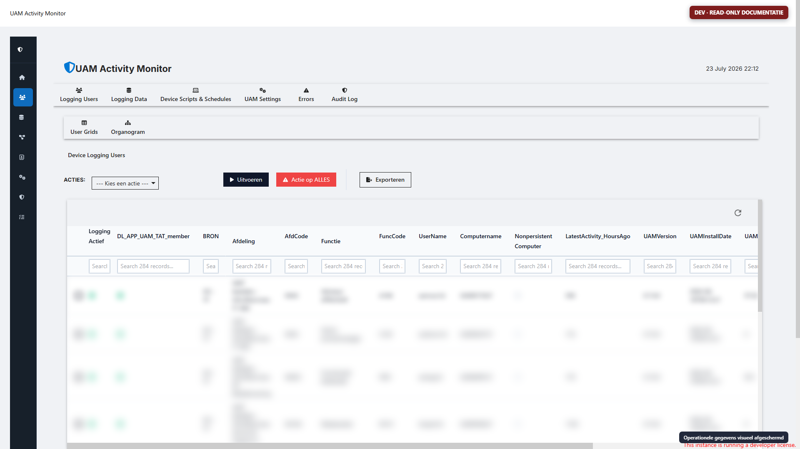
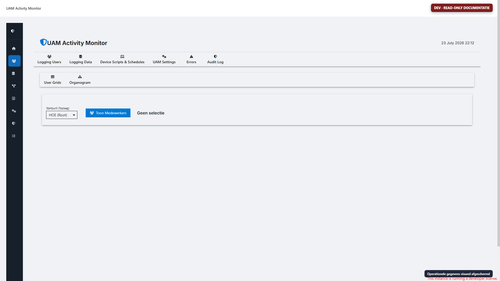
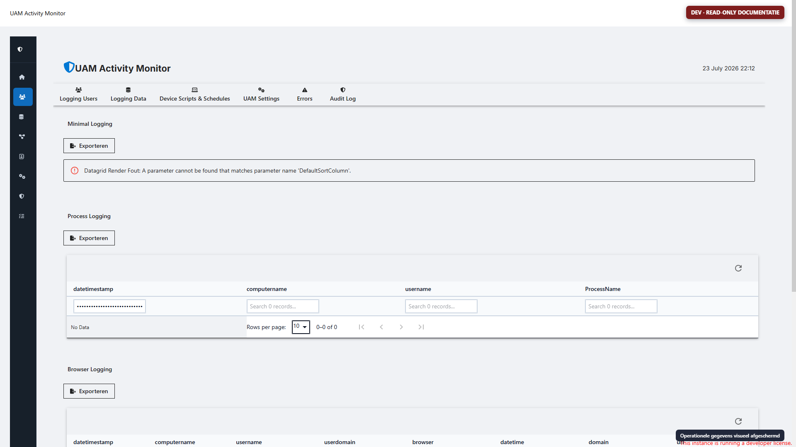
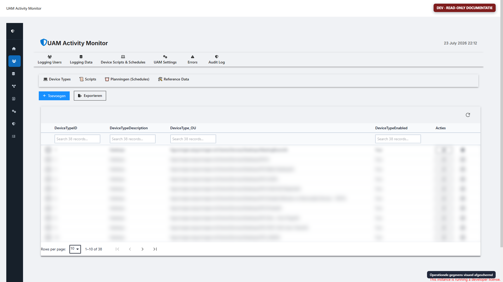
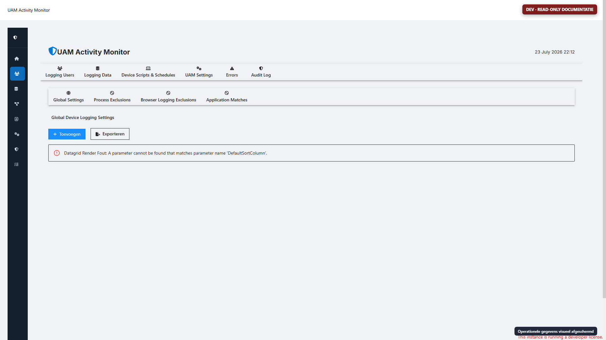
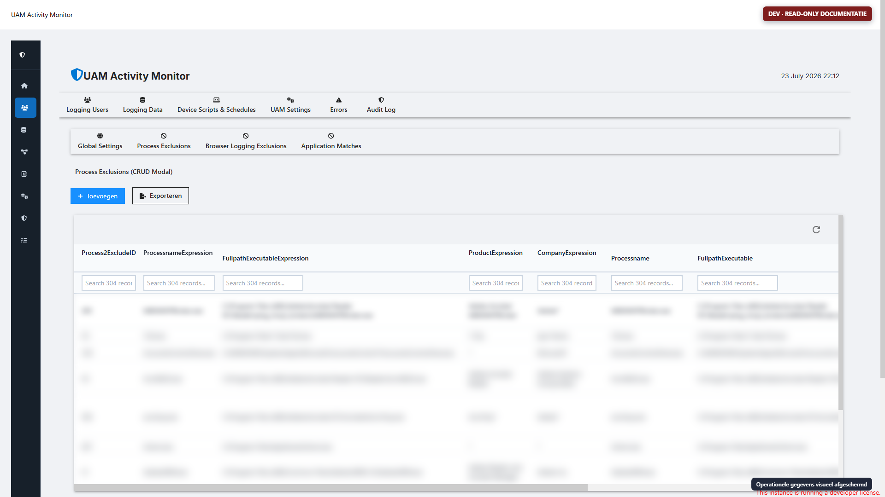
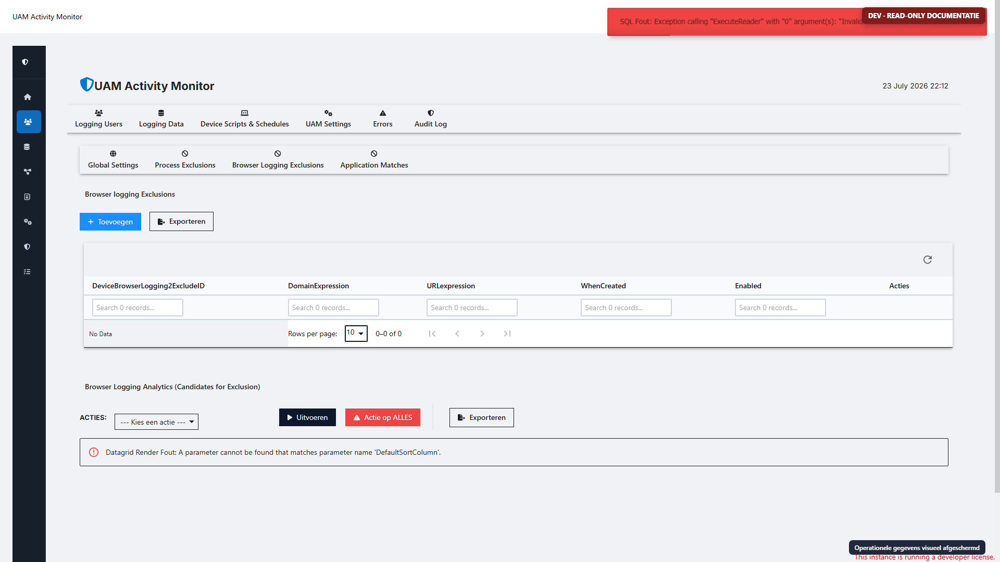
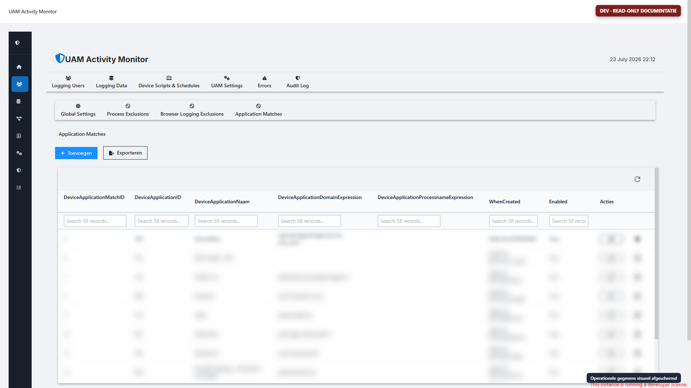
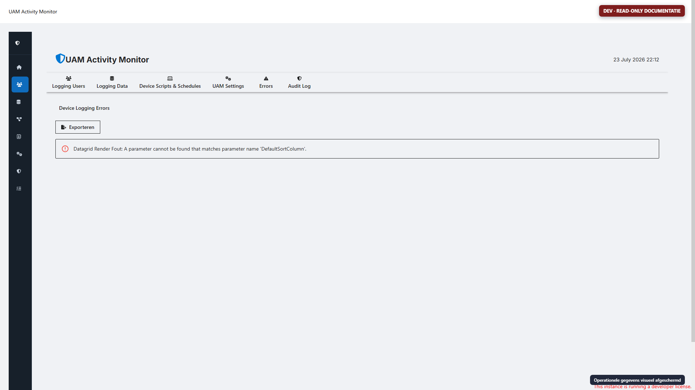
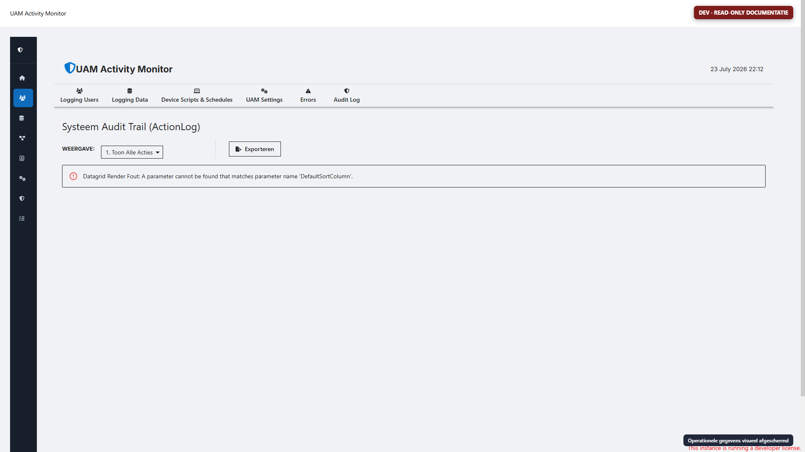

| Omgeving | App | Route | Status | Bron |
|---|---|---|---|---|
| DEV | uam-logging / UAM Activity Monitor |
/uam-logging |
Started | lokaal uam-logging.ps1, 1.217 regels |
| PROD | User Activity Monitor, ID 18 |
/UAM |
Started | PSU-content, 2.758 regels |
| PROD oud/alternatief | UAM2 |
/UAM2 |
Stopped | niet als actuele IST behandeld |
De productie-app is functioneel uitgebreider dan de DEV-bron. De productiebron is read-only opgehaald via de PSU API en geanalyseerd; de app-token en credentials zijn niet in artifacts opgeslagen.
Logging Users
├─ User Grids
└─ Organogram
Logging Data
Device Scripts & Schedules
├─ Device Types
├─ Scripts
├─ Planningen (Schedules)
└─ Reference Data
UAM Settings
├─ Global Settings
├─ Process Exclusions
├─ Browser Logging Exclusions
└─ Application Matches
Errors
Audit Log
De beheerapp combineert drie rollen: operationeel inzicht, configuratie van de agent en een vroege taak-/schedulerfunctie. In de nieuwe oplossing horen deze als afzonderlijke portalcapabilities met expliciete rechten en audit te worden gemodelleerd.
De DEV-app is met een tijdelijk Chrome-profiel en Chrome DevTools Protocol doorlopen. De automation staat uitsluitend toe:
role=tab of vier expliciet gewhiteliste ondertablabels;Niet toegestaan en niet uitgevoerd:
Vóór elke screenshot worden tabellichamen/gridrijen geblurd, inputwaarden gemaskeerd, canvaslabels geblurd en accountlabels verborgen. De rode badge benoemt de omgeving en read-only status.
Doel:
Belangrijk voor de vervanger:

Doel:
In de DEV-opname is geen organisatienode gekozen, omdat “Toon Medewerkers” een servercallback kan uitvoeren en de opname strikt op generieke read-only controls is begrensd.

Doel:
Risico's:
De nieuwe portal moet standaard geaggregeerd openen, een expliciete reden/rol voor detailinzage vereisen en alle detailqueries begrenzen op tijd, tenant en scope.

Doel:
De screenshot toont dat het onderdeel al als beheermodule is opgezet, maar de taakuitvoering in de legacy agent niet volledig is afgerond. Script_Code maakt willekeurige PowerShell mogelijk en is daardoor geen geschikt eindmodel.
Nieuwe portalcapabilities:

Doel:
In de actuele DEV-app is een concrete renderfout zichtbaar: de gridhelper krijgt een niet-bestaande parameter DefaultSortColumn. Dit is een DEV-runtime-/versieverschil en geen bewijs dat productie hetzelfde probleem heeft.
De nieuwe portal moet typed setting schemas gebruiken, met validatie, defaults, revision, change reason, audit, staged activation en rollback. Secrets horen niet in deze generieke settingstore.

Doel:
Nieuw inzicht is allowlist in plaats van denylist. Toon daarom alleen centraal goedgekeurde applicatie-/procesmatches en registreer waarom een match is toegestaan.

Doel:
De productietabel bevat meer dan vierduizend regels. De nieuwe architectuur draait dit om: alleen applicatie-/URL-patronen op een allowlist worden gelogd; de rest wordt niet getransporteerd.

Doel:
Dit is de functionele voorloper van de gewenste centrale Application Registry. DeviceApplicationID is nu tekst zonder FK. In de nieuwe portal wordt dit een echte interne ApplicationId met optionele externe CMDB-key en provenance.

Doel:
Nieuwe portal: fingerprinting/aggregatie, correlation-id, task-run, redactie-indicator, occurrence count, first/last seen, acknowledgement en gecontroleerde tijdelijke trace policy.

Doel:
Het huidige model is polymorf. De nieuwe auditstore moet immutable events gebruiken met actor, tenant, capability, entity type/id, before/after-diff, reason, correlation en policy revision.

De productie-appbron, routes en tabstructuur zijn vastgesteld. De productie-API-token kan appbron en metadata lezen, maar geen interactieve browsersessie aanmelden. De lokale DEV-adminreferenties worden in productie geweigerd. Een geldige productie-opname vereist daarom een handmatige login in het zichtbare tijdelijke browserprofiel. Bij een volgende sessie kan hetzelfde script worden gebruikt:
.\scripts\Invoke-UamReadOnlyBrowserWalkthrough.ps1 `
-AppUri 'http://10.1.23.109:5000/UAM' `
-EnvironmentLabel PROD `
-ProxyServer 'http://proxy.net.groningen.nl:8080' `
-OutputDirectory '.\artifacts\screenshots\prod' `
-Visible `
-InteractiveLogin `
-LoginTimeoutSeconds 900
De gebruiker meldt zelf aan en deelt geen wachtwoord. Na redirect naar /UAM neemt de read-only automation het over en verwijdert aan het einde het tijdelijke profiel.
De overdracht bevat daarnaast UAM-PSU-app-walkthrough.mp4: een stille DEV-rondleiding met alle toelichting in beeld. Het bewerkbare PowerPoint-bronbestand, een .srt-ondertitelbestand en een Markdown-transcript worden meegeleverd. De video gebruikt de bestaande privacygemaskeerde DEV-opnamen en vermeldt expliciet dat de actuele DEV-heropname en de PROD-opname nog een handmatige PSU-login vereisen.